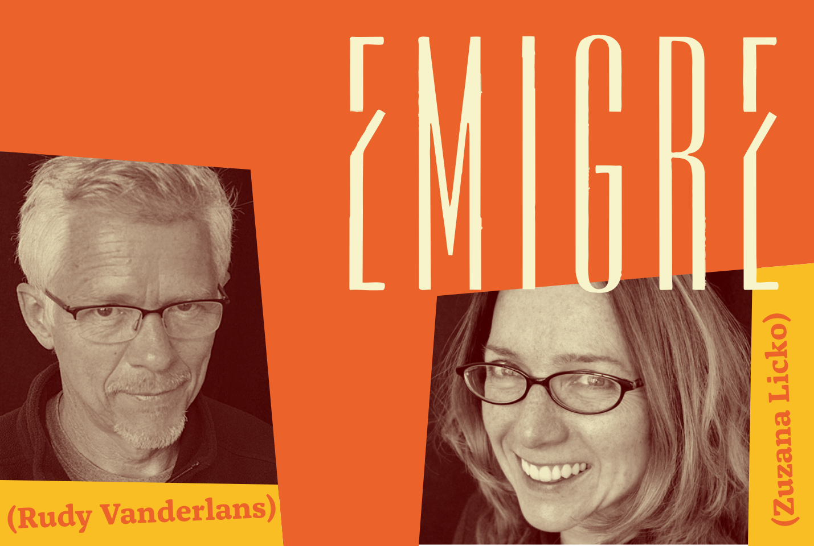

Emigre Graphics is a type foundry based in Berkeley, CA composed of graphic designer Rudy Vanderlans and type designer Zuzana Licko. Emigre started out as pioneers in the digital era by producing magazines using digital layouts and bitmapped typefaces. Over the years, Emigre became a well known figure in the graphic design world, cultivating a large library of typefaces that see widespread usage today.